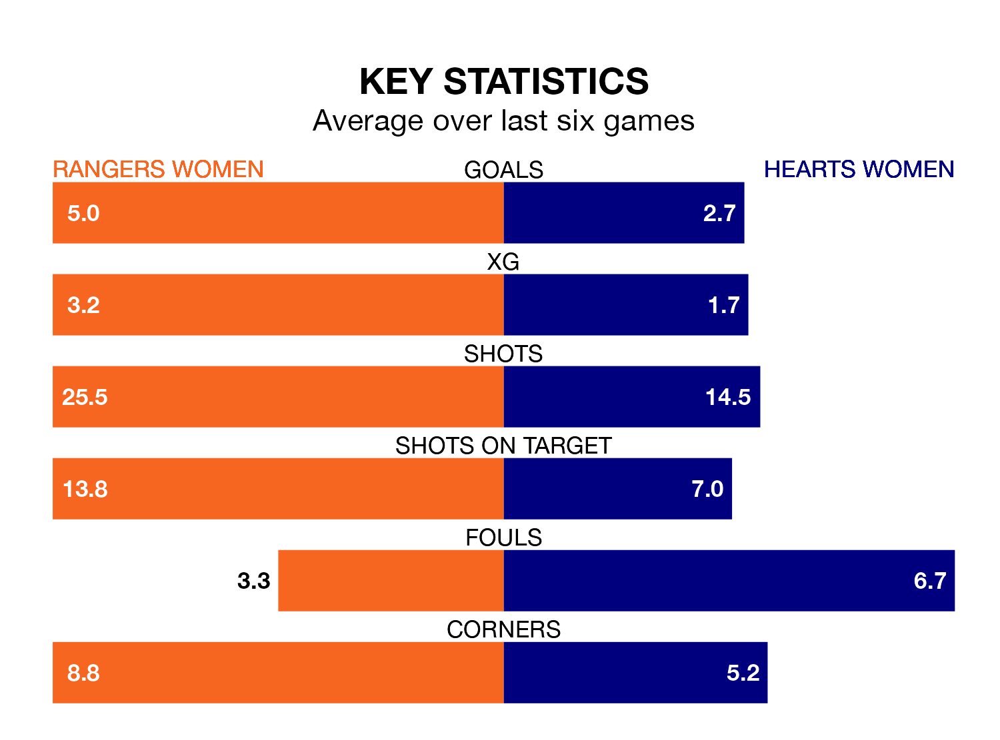

Two of SWPL 1's meanest defences go head-to-head at the Broadwood Stadium on Wednesday, when Rangers Women host Hearts Women.
No teams have conceded fewer goals than Rangers to date: the home side have let in just nine goals in 18 games.
Hearts have conceded 21 goals in 18 games, giving them the fourth tightest back line so far this season.
Key to Rangers's home form has been Jenna Fife, who has allowed 0.5 goals past him per 90 minutes, compared to 1.2 for Charlotte Parker-Smith in the opposite net.
Rangers are top of the table after 18 games, of which they have won 17 and drawn one, earning 52 points.
Hearts are four places behind the home team in fifth, with 10 wins and three draws putting them on 33 points.
Rangers are in exceptional form in SWPL 1, with six wins and no losses from their last six games.
With four wins and a draw over that period, the visitors' form is worse – they have taken 13 points from 18, compared to Rangers's 18.
In Rio Hardy, the hosts have one of the league's sharpest shooters so far this season. She has notched 18 goals in 17 appearances, to sit second in the scoring charts.
Her goal rate of one every 80 minutes is quicker than that of Katie Jayne Lockwood, Hearts's top scorer with a goal every 99 minutes, and a total of 14 goals in 16 games.
In the last 10 years, Rangers and Hearts have played each other on 12 occasions. Rangers won 10 of them and they drew twice.
On average, Rangers scored 3.7 goals and Hearts 0.3 in those matches.
Their last meeting was on October 1, when Rangers won 4-1 away.
Rangers's last match was on January 28, a 2-1 win against Aberdeen, with Rachel Rowe getting the goals for Rangers.
Hearts beat Spartans Women 1-0 last time out, also on January 28, with Lockwood on the scoresheet.
Updated: 10:28 (UTC), 06/02/24